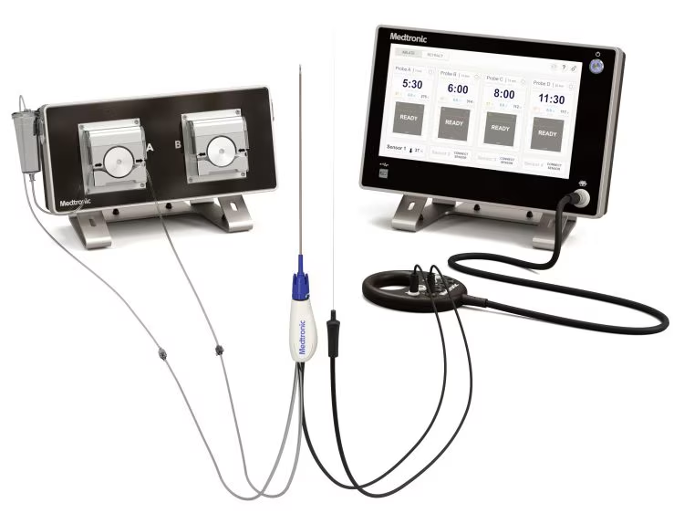
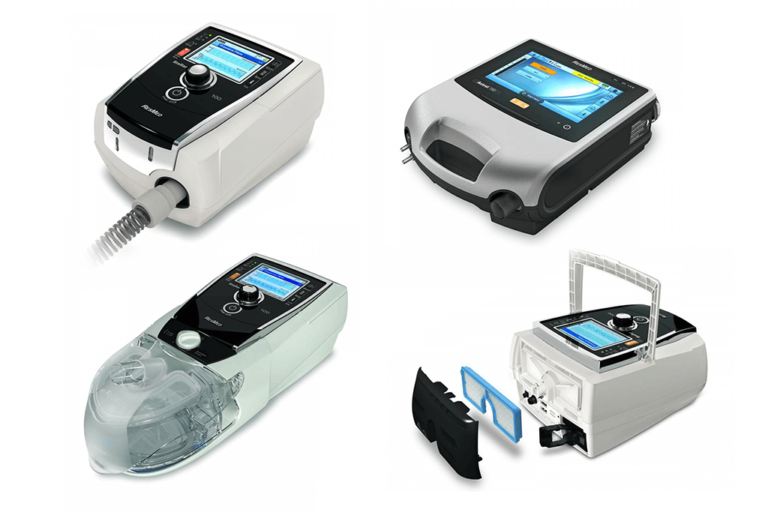
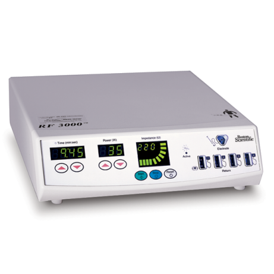
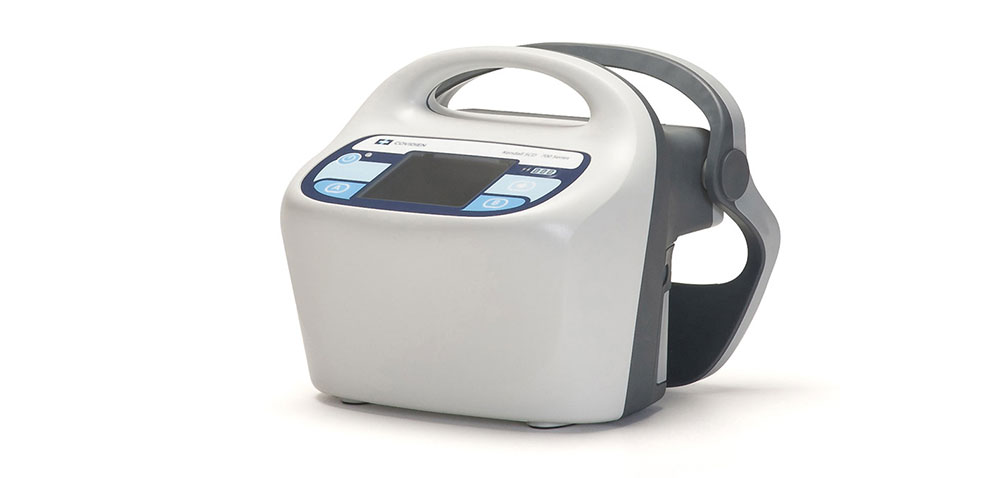
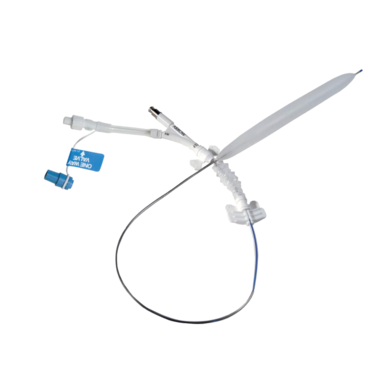
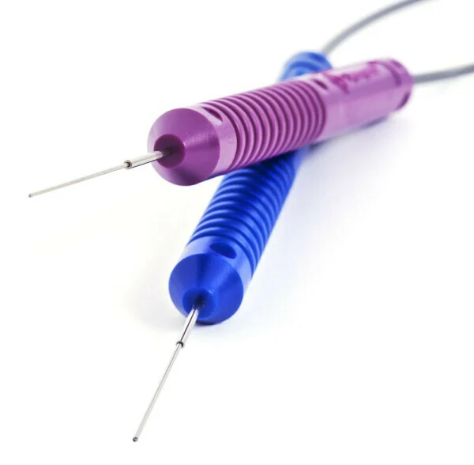
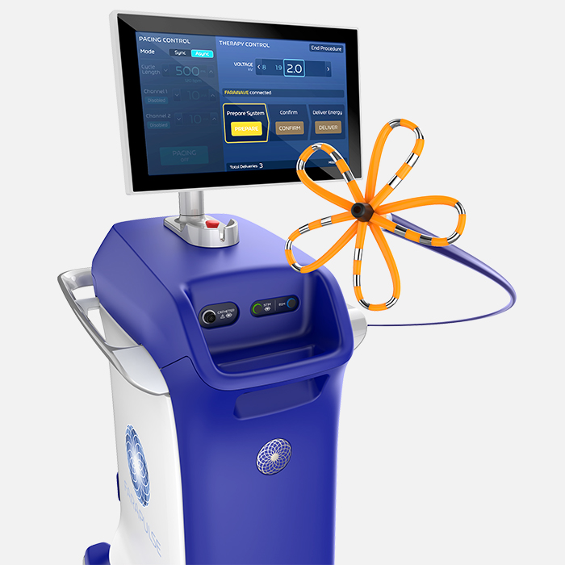
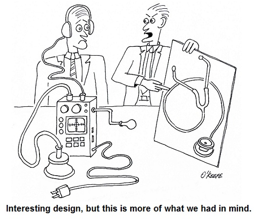

3 Background
The report published on this website is a draft and subject to frequent updates. Please be aware that the content may change over time as revisions are made. Thank you for your understanding.
If you have questions, comments, or feedback, please contact Esteban Solorzano.
3.1 Systems Engineering in Medical Device Industry
David M. Cronin from a company called Cognition that provides software solutions for requirements management and lifecycle management of medical devices states that for many, the phrase “systems engineering” is typically associated with large aerospace and defense companies; companies making products that are developed over many years, with long lives in the market, extremely high costs, and a relatively low total number of products manufactured. Many of these companies also employ “large,” permanent teams of systems engineers, which could be daunting to a small device company. Few device engineers are seen at conferences on systems engineering. Instead, these events include transportation, infrastructure, government, space, and of course aerospace and defense. A casual observer might think that systems engineering is not intended for the medical device industry. This is unfortunate!” (Cronin, n.d.).
3.2 What is a Medical System?
According to Section 201(h) of the Federal Food, Drug, and Cosmetic Act, a medical device (system) is “any instrument, machine, contrivance, implant, in vitro reagent that’s intended to treat, cure, prevent, mitigate, diagnose disease” (“21 USC 321: Definitions; Generally,” n.d.).
3.2.1 Examples of medical systems
The following are examples of medical systems. The list is not exhaustive.
- Spinal Tumor RF Ablation System

- Invasive / Non Invasive Ventilator

- Renal RF Ablation System

- Vascular Compression System

- Intra-Aortic Balloon Pump

Medical Information Management System
Endoilluminator

RF Puncture Generator
Bleed Monitoring System
Pulsed Field Ablation System

- Nerve Tissue RF Ablation System
3.3 Medical Device Regulation
The medical devices that are manufactured, marketed and commercialized are subject to regulation by numerous worldwide regulatory bodies, including the FDA and comparable international regulatory agencies. These agencies require manufacturers of medical devices to comply with applicable laws and regulations governing development, testing, manufacturing, labeling, marketing and distribution. Medical devices are also generally subject to varying levels of regulatory control based on risk level of the device.
In the U.S., authorization to distribute a new device can generally be met in one of two ways (“Boston Scientific SEC Filings,” n.d.):
3.3.1 Premarket Notification (510(k))
The premarket notification (510(k)) is made to the FDA to demonstrate that the device is as safe and effective as, or substantially equivalent to, a legally marketed device (the “predicate” device). Applicants must submit performance data to establish substantial equivalence. In some instances, data from human clinical trials must also be submitted in support of a 510(k) premarket notification. If so, these data must be collected in a manner that conforms to the applicable Investigational Device Exemption (IDE) regulations. The FDA must issue a decision finding substantial equivalence before commercial distribution can occur. Changes to cleared devices that could not significantly affect the safety or effectiveness of the device can generally be made without additional 510(k) premarket notifications; otherwise, a new 510(k) is required.
3.3.2 Premarket Approval (PMA) Application
The submission of a premarket approval (PMA) application to the FDA demonstrates that the device is safe and effective for its intended use. This approval process applies to most Class III devices and generally requires clinical data to support the safety and effectiveness of the device, obtained in adherence with IDE requirements. The FDA will approve the PMA application if it finds that there is a reasonable assurance that the device is safe and effective for its intended purpose and that the proposed manufacturing is in compliance with the Quality System Regulation (QSR). For novel technologies, the FDA may seek input from an advisory panel of medical experts and seek their views on the safety, effectiveness and benefit-risk of the device. The PMA process is generally more detailed, lengthier and more expensive than the 510(k) process.
3.4 European Union (EU)
In the European Union (EU), it is required to comply with the Medical Device Regulation (MDR or EU MDR) which became effective in May 2021, superseding the existing Medical Device and Active Implantable Medical Device Directives. Medical devices which have a valid CE Certificate (“CE Marking,” n.d.) to the prior Directives (issued before May 2021) can continue to be sold during the applicable transition period or until the CE Certificate expires, whichever comes first, providing there are no significant changes to the design or intended use. The CE Mark, which is required to sell medical devices in the EU is affixed following a Conformity Assessment and either approval from the appointed independent Notified Body or through self-certification by the manufacturer. The selected pathway to CE marking is based on device risk classification. CE marking indicates conformity to the applicable General Safety and Performance Requirements (GSPRs) for the MDR. The MDR changes multiple aspects of the regulatory framework for CE marking, such as increased clinical evidence requirements, changes to labeling, and new requirements, including Unique Device Identification (UDI), and many new post-market reporting obligations. MDR also modifies and increases the compliance requirements for the medical device industry and will continue to require significant investment over the next few years to transition all products. The CE mark continues to be a prerequisite for successful registration in many other global geographies. In addition, other EU countries continue to impose significant local registration requirements despite the implementation of MDR, and the United Kingdom has introduced new requirements following its exit from the EU.
It is also required to comply with the regulations of every other country where the product will be commercialized before launch or maintain new products on the market, including regulations that have been introduced in many countries in the Middle East and Southeast Asia that previously did not have medical device regulations, or had minimal regulations. In Japan, it is required to comply with Japan’s Ministry of Health, Labor and Welfare (MHLW) regulations. In conjunction with the MHLW, the Pharmaceutical and Medical Device Agency is an independent agency that is responsible for reviewing drug and medical device applications and works with the MHLW to assess new product safety, develop comprehensive regulations, and monitor post-market safety.
The FDA and other worldwide regulatory agencies and competent authorities actively monitor compliance to local laws and regulations through review and inspection of design and manufacturing practices, record-keeping, reporting of adverse events, labeling and promotional practices. The FDA can ban certain medical devices, detain or seize adulterated or misbranded medical devices, order recall or market withdrawal of these devices and require notification of health professionals and others with regard to medical devices that present unreasonable risks of substantial harm to the public health. The FDA may also enjoin and restrain a company for certain violations of the Food, Drug and Cosmetic Act and the Safe Medical Devices Act, pertaining to medical devices, or initiate action for criminal prosecution of such violations. Regulatory agencies and authorities in the countries where business is done can halt production in or distribution within their respective country or otherwise take action in accordance with local laws and regulations.
International sales of medical devices manufactured in the U.S. that are not approved by the FDA for use in the U.S., or that are banned or deviate from lawful performance standards, are subject to FDA export requirements. Additionally, exported devices are subject to the regulatory requirements of each country to which the device is exported.
According to Webinar Applications of Systems Engineering in Healthcare, lead by Chris Unger, Ph.D. ESEP of GE Healthcare and Vincent Balgos of Jama Software, some challenges faced by the medical device industry:
- Constant time pressure launching safe and effective products
- ~70% of medical products are delivered late.
- Time to define requirements has increased 29% and unplanned requirements churn has increased 81%.
- Shifting regulatory landscape
- E.g., Software as a Medical Device (SaMD), Software in a Medical Device (SiMD), Medical Device Regulation (MDR), In Vitro Diagnostic Regulation (IVDR), etc.
- Cost of adherence and impact on business strategy.
- Quality issues represent significant financial impact
- Non-routine quality events cost the industry between $2.5 and $5 billion per year on average.
- On average, one company per year has seen a 10% drop in share price after a single, major quality event.
- Constant increasing complexity, particularly with software
- Software has become the biggest cause of medical device recalls.
- E.g., The global artificial intelligence/machine learning medical device market was an estimated $4 billion in 2022 and is anticipated to reach $35.5 billion by 2032.
- E.g., Remote patient monitoring market was valued at $2.1 billion in 2022 and expected to reach $8.1 by 2030.
- Increasing risk of cybersecurity concerns.
- Heavy focus on acquisition and geographically distributed development teams
- E.g., The medical devices sector in Q2 2023 witnessed deals worth $33 billion, a growth of 42% compared to Q1 2023 and 87% compared to Q2 2022.

3.5 Medical System Product Life Cycle
Exploratory: Is there viability to solve a clinical need?
Technology Development: Can we make this technology?
Product Development: Create the end product.
Sustaining: Keep a product on the market and enhance the system.
Many life saving devices come with significant risk which must be mitigated through a defined system design process. A seamless integration of the design and development process and the safety risk management process will allow devices to be safety used on humans. The development process is described in ISO 13485, the international standard for the development of medical devices. ISO 14971 is the international standard for the evaluation of the safety risk of a medical device. Universities and companies hoping to use their devices in clinical trials on patients are required to follow a well-defined process incorporating design and development planning, design input, design output, design review, design verification, and design validation (Wehde 2020).
3.6 Role as Medical Device Systems Engineer
Medical device systems engineers interact with internal and external stakeholders.
3.6.1 Internal stakeholders
- Bioinformatics
- Biotechnology
- Biomedical Engineering
- Chemical Engineering
- Clinical Research
- Control Engineering
- Data Science and Analytics
- Design Quality Assurance
- Electrical Engineering
- Finance
- Industrial Engineering
- Materials Engineering
- Mechanical Engineering
- Project Management
- Regulatory Affairs and Compliance
- Software Engineering
- Computer Science
- Supply Engineering
- Systems Engineering
3.6.2 External stakeholders
- Patients
- Medicine and Healthcare Professionals
- Insurance Companies
- Governments
- Standards Organizations
- Distributors
- Component suppliers
4 Medical Device Systems Engineering
Medical Device Systems Engineering is a multidisciplinary field that encompasses the design, development, and implementation of medical devices. It integrates engineering concepts, medical knowledge, regulatory compliance, and user-centered design principles to ensure the seamless functioning of complex medical systems. This approach bridges the gap between technical innovation and patient-centric care, leading to the creation of advanced devices that address healthcare challenges.
4.1 Components of Medical Device Systems Engineering
According to Nocchi (Nocchi 2023) the following are components that make up medical device systems engineering:
- Requirements Analysis and Definition: Understanding the clinical needs and user requirements is the foundation of any medical device. Engineers collaborate closely with medical professionals to define specifications, ensuring that the device aligns with its intended purpose.
- Design and Development: This phase involves translating requirements into tangible design elements, encompassing hardware, software, and user interfaces. Iterative design processes are common, enabling refinements based on feedback and testing.
- Risk Management: Identifying and mitigating risks is essential to ensure patient safety. Engineers assess potential hazards and develop strategies to minimize or eliminate them throughout the device’s lifecycle.
- Verification and Validation: Rigorous testing and validation protocols are crucial to verify that the device meets its intended functionality and is safe for use. This includes laboratory testing, simulations, and clinical trials.
- Regulatory Compliance: Adhering to regulations set by authorities such as the FDA, EMA, or other regional bodies is paramount. Engineers ensure that devices meet these standards and navigate the complex landscape of approvals.
- Human Factors Engineering: Designing devices with user experience in mind is critical for healthcare professionals to effectively operate the technology in real-world settings. Ergonomics and usability are key considerations.
- Interoperability and Integration: Many medical devices are part of larger healthcare systems. Ensuring seamless integration and communication between devices is crucial for data exchange and coordinated care.
4.2 Challenges and Best Practices:
Nocchi (Nocchi 2023) states the following challenges and best practice systems engineers face with medical systems:
- Complexity and Innovation: The integration of diverse technologies, ranging from hardware to software, poses challenges in managing complexity while fostering innovation. Embracing modular design and agile methodologies can streamline the development process.
- Regulatory Compliance: Navigating the regulatory landscape requires a deep understanding of regional requirements. Engaging regulatory experts early in the process and maintaining thorough documentation eases the compliance journey.
- Human-Centered Design: Prioritizing the end user’s needs and experience can significantly impact device adoption and success. Regular user testing and feedback loops help refine design elements.
- Risk Management: Identifying and managing risks requires a proactive approach. A thorough understanding of potential hazards, supported by regular risk assessments, is essential.
- Cross-Disciplinary Collaboration: Effective communication among engineers, medical professionals, regulatory experts, and other stakeholders is key. Collaboration fosters a comprehensive understanding of all facets of device development.
4.3 What is different about Medical Technology Industry versus the “Rest of Systems Engineering”?
- Compliance with regulations: Food and Drug Administration (FDA), International Electrotechnical Commission (IEC; French: Commission électrotechnique internationale), International Organization for Standardization (ISO), Health Insurance Portability and Accountability Act (HIPAA), International Classification of Diseases (ICD-10), etc.
- Defects are VERY costly to handle (audit, warning letters, recalls, …)
- Most products are developed in a geographically distributed way
- Rapid technology evolution is impacting development and delivery
- AI, IoT, product variants, Mobile Medical Apps, complex deployment models, cloud.
- Extreme time to market pressures: 1st to market usually gains 80% share.
- Market Driven versus Contract Driven.
- Customer of “systems engineering” is internal (marketing, product management).
- Requirements, dates, budgets are more ‘flexible’…success is judged by the market, not by a single customer.
Image source: https://www.medtronic.com/us-en/healthcare-professionals/products/spinal-orthopaedic/tumor-management/osteocool-ablation-system-rf.html↩︎
Image source: https://lifedme.com/non-invasive-ventilator/↩︎
Image source: https://www.bostonscientific.com/en-US/products/ablation/RF3000-Radiofrequency-Generator.html↩︎
Image source: https://www.cardinalhealth.com/en/product-solutions/medical/compression/kendall-scd-compression-system.html↩︎
Image source: https://us.myteleflex.com/en/USD/All-Categories/Interventional-Cardiology-%26-Radiology/Mechanical-Circulatory-Support-%26-Cardiac-Diagnostics/Intra-Aortic-Balloon-Catheters/Arrow%C2%AE-Intra-Aortic-Balloon-Catheter/p/arrow_iabp_catheters↩︎
Image source: https://www.bauschsurgical.com/retina/endoilluminators/↩︎
Image source: https://www.bostonscientific.com/en-US/products/catheters--ablation/farapulse.html↩︎